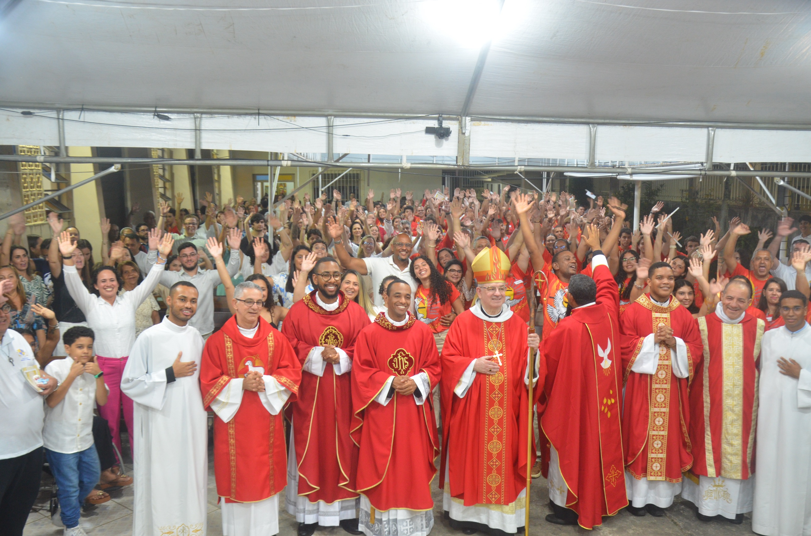

UMA COMUNIDADE EM MISSÃO
Jovens, famílias e
voluntários em ação.
voluntários em ação.
Grupos de jovens, pastorais e movimentos ganham vida e alcance com o sustento de quem dizima — a missão continua, geração após geração.
